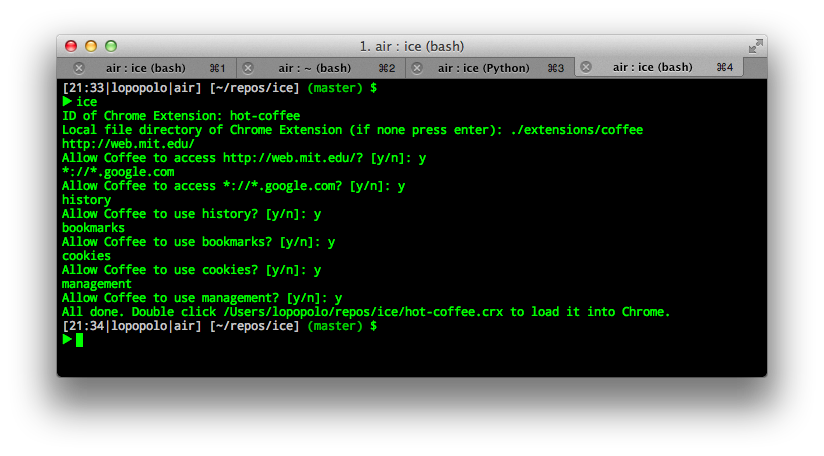
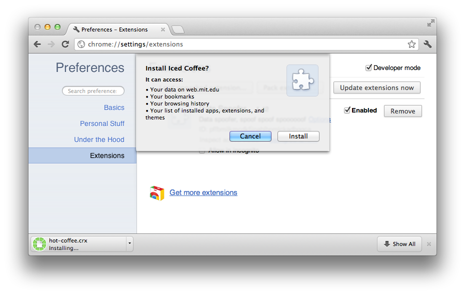
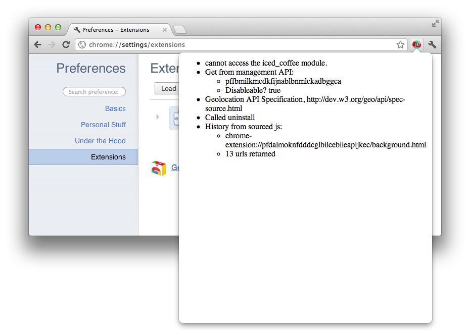
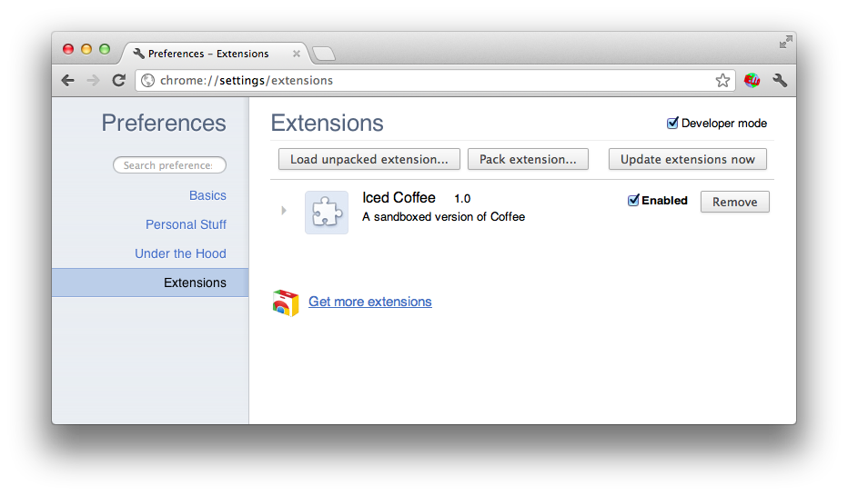
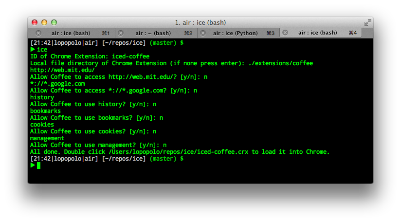
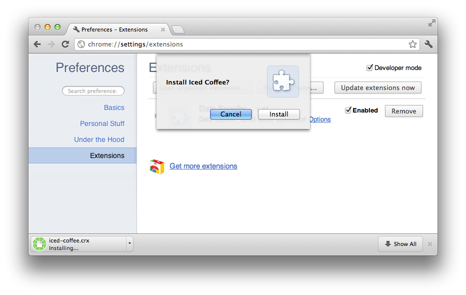
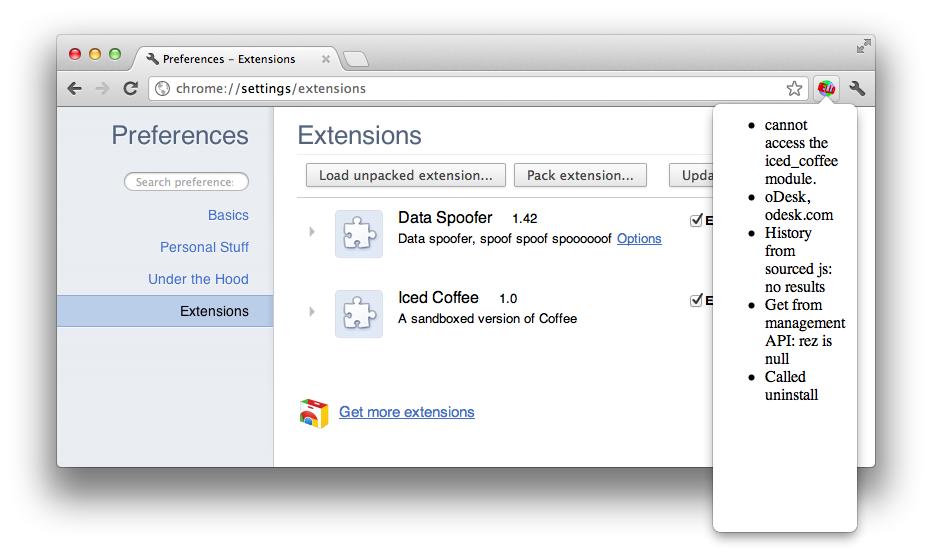

ICE - Interposing on Chrome Extensions
The problem with permissions in Chrome extensions is that they are an all or nothing affair. Users do not figure into the process of what extensions have access to.
This project provides a means for revoking permissions from an extension before it is installed. To prevent extensions from figuring out they have been sandboxed, we provide an extension called Spoofer.
The process of sandboxing an extension involves:
- Asking the user to decide which permissions the extension should have
- Rewriting html and js source files to point all chrome.* API calls to wrapped versions.
- When the extension runs, the wrapped chrome APIs delegate to the Spoofer extension by passing messages. Spoofer generates fake response data.
Installation
$ cd ice/ice
$ python setup.py install
$ gem install crxmake
Let's see it in action
So we've installed Spoofer and we're ready to start sandboxing extensions. The repo has an example of a nefarious extension, Coffee. Coffee is located at $REPO_ROOT/extensions/coffee.
Let's wrap this baby up! 
It doesn't look like we did much in the way of limiting this extension. Let's see how bad it is.
Egads, that's a lot of permissions! Oh well, let's run it anyway. click on that icon!
 So hot coffee steals our history and uninstalls the spoofer extension. It's on to us and our sandboxing ways. Time to whip out the big guns.
 Ahh that looks a lot better. It can't possibly harm us now!
But look, you say, it still is getting history data. Very good, I say to you; however, the data it does get is faked using a state of the art method: randomly generated URLs.
Issues
- Extensions can still figure out if they're sandboxed. If an extension originally has the management permission, it can query chrome about installed extensions, including itself. The wrapping process changes the identifier of the extension, we would report the original extension as uninstalled.
- We need to disallow access to eval.